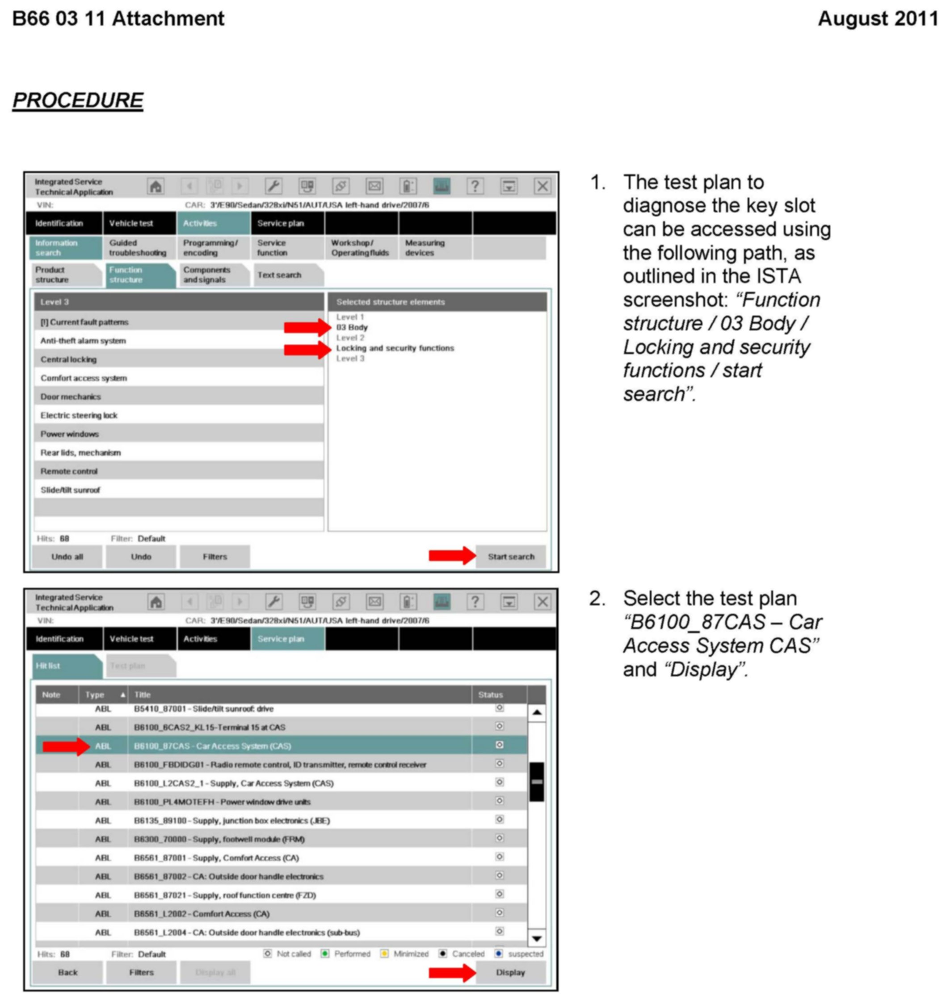
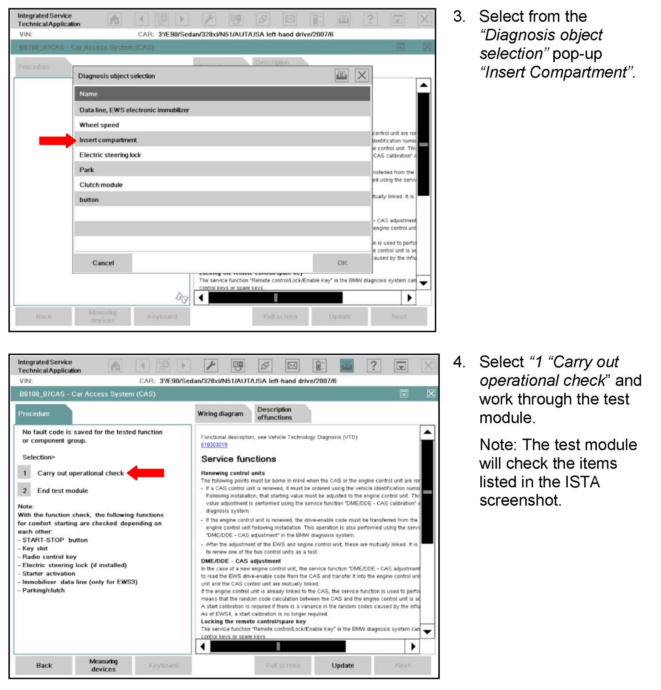

Keyless Entry/Start Sys. - Key Doesn't Stay In Ignition
SI B66 03 11Distance Systems, Cruise Control, Remote Control
August 2011
Technical Service
SUBJECT
Key Does Not Stay Engaged in Ignition Lock of Remote Control (Key Slot)
MODEL
E82, E88 (1 Series)
E90, E91, E92, E93 (3 Series)
SITUATION
The key does not stay engaged in the ignition lock of the remote control (key slot) when inserted. Other functions of the key (locking/unlocking, Comfort Go, etc.) work properly.
CAUSE
Faulty key slot
PROCEDURE
Perform diagnosis of the key slot using ISTA (Integrated Service Technical Application). Troubleshoot any CAS (Car Access System) or key-related faults. If standard troubleshooting does not identify the root cause of the problem, follow the attached procedure.
WARRANTY INFORMATION
For information only
ATTACHMENTS


B660311-Procedure